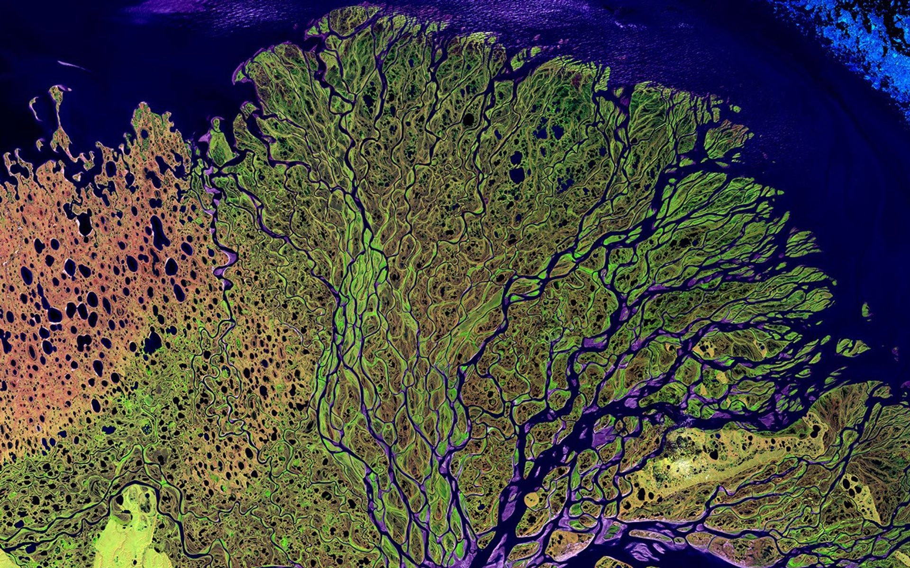
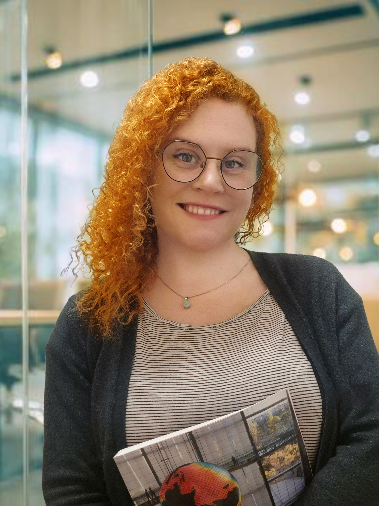

GIS og fjernmåling
Romlig analyse, tolkning av satellittbilder og kartlegging for å forstå mønstre og endringer i miljøet.
GEOGRAFISK ANALYSE
GIS / Fjernmåling / Miljøanalyse
Jeg bruker geografiske data til å undersøke hvordan landskap endrer seg, og hvordan mennesker påvirker og bruker omgivelsene sine.

Mitt perspektiv
Jeg har en mastergrad i GIS og fjernmåling, en bachelorgrad i samfunnsgeografi og erfaring fra prosjekter knyttet til hav, kyst og land.
Gjennom Sigrøn utvikler jeg egne prosjekter og utforsker nye måter å bruke geografiske data på.
Romlig analyse, tolkning av satellittbilder og kartlegging for å forstå mønstre og endringer i miljøet.
GEOGRAFISK ANALYSEErfaring med marint vern, kystmiljø, skog og landskapsendringer, med tydelige kart og visuell formidling.
LAND, KYST OG HAVJeg bygger videre på kurs i droner i landbruket, LiDAR og fotogrammetri for å utforske detaljert kartlegging av terreng, vegetasjon og miljø.
DRONE-LIDAR OG FOTOGRAMMETRI ↗Utvalgt arbeid fra arbeidslivet
Teknisk bidrag hos SALT
Jeg arbeidet med den tekniske delen av prosjektet, som undersøker hvordan satellittobservasjoner kan bidra til å overvåke miljøpåvirkning fra naturbasert turisme.
Mer om mitt bidrag
PROSJEKTETS SPØRSMÅL
Satellittbilder
Besøk, terreng og værforhold
Miljøovervåking og forvaltning
Pågående prosjekter · Sigrøn
Egne prosjekter som undersøker hvordan geografiske data kan hjelpe oss å forstå nærmiljøet vårt.
 Under utforskning
Under utforskningJeg undersøker vannkvalitet og cyanobakterier i Goksjø, og hvordan satellittdata, kart og lokale observasjoner kan bidra til å finne mønstre og følge endringer over tid.
Se prosjektet Prosjekt under utvikling
Prosjekt under utviklingJeg undersøker hvordan geografiske data kan brukes til å kartlegge lysforurensning, finne mørkere områder og forstå naturlig mørke som en miljøkvalitet.
Se prosjektetAkademisk forskning
I masterarbeidet brukte jeg GIS og fjernmåling til å undersøke skogsammensetning, fuktighetsmønstre og gjenvekst etter brann i skandinaviske boreale skoger.
Se masteroppgaven Master i GIS og fjernmåling · Ulster University
Master i GIS og fjernmåling · Ulster UniversityTa gjerne kontakt
Jeg er interessert i arbeid som kobler geografisk analyse til miljøspørsmål og praktiske beslutninger.
alexandrafjellvik@gmail.comSandefjord, Norge ·+47 913 29 902